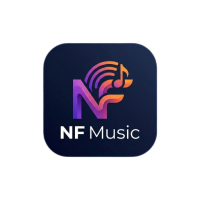

0 Lagu
Lagu yang paling sering Anda dengarkan dalam sesi ini.
Siap untuk streaming langsung
Sesuaikan warna dan suasana pemutar musik NF Anda.
Nuansa gelap dengan aksen pink magenta.
Nuansa hijau zamrud elegan ala alam.
Sentuhan warna emas mewah klasik.
Pengembang Aplikasi NF Musik
085719134016
Fer-tech.myr.id
Ferdianocktavianto90@gmail.com
Nama Aplikasi: NF Musik Player Pro
Versi: 4.1.0 (Web/Desktop/Mobile)
Developer: Ferdian Ocktavianto
Lisensi: Not Premium
Pilih musik
Masukkan link YouTube / YouTube Music untuk mengunduh lagu kualitas tinggi langsung ke aplikasi.